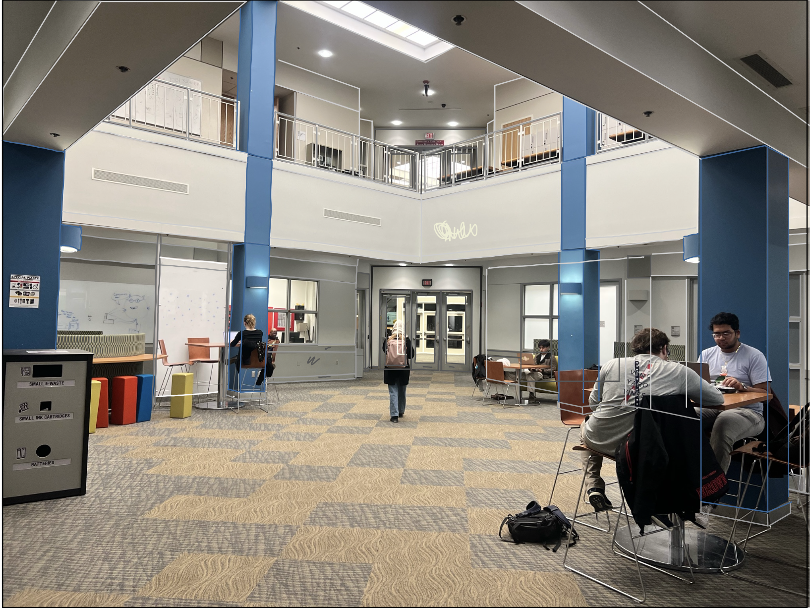
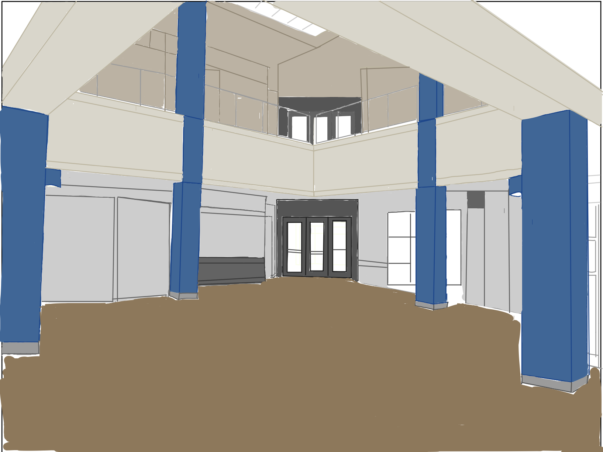
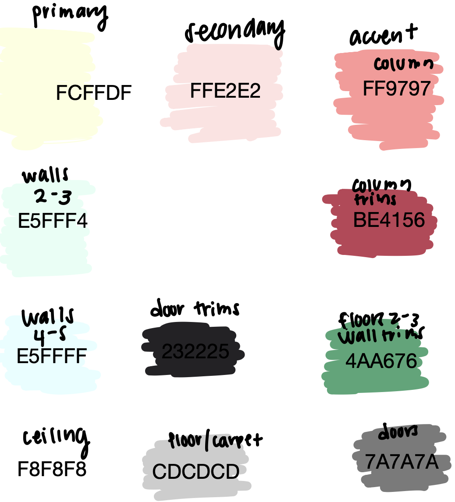
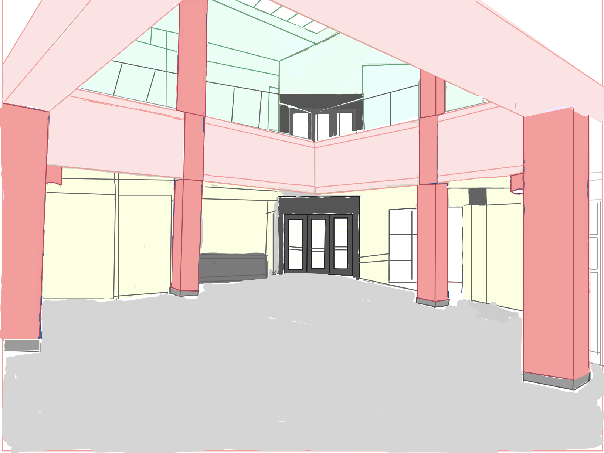

Paint the CIT

A color redesign to reimagine Brown University's Center for Information Technology
Context & Problem
The CIT, Brown's tech hub, is filled with activity but its color palette doesn't reflect that energy. As part of my visual design exploration, we were tasked with proposing a new color direction that brings the CIT to life.
The original design features lots of beige, gray, and outdated carpeting. It lacks visual vibrancy and fails to match the innovative work happening inside.
Initial Observations
While the existing space feels clean and professional, it’s uninspired. The blue pillars and quirky furniture inject some life, but are overshadowed by the overwhelming neutrality of the walls and floors. Students move through the space, but it doesn’t invite collaboration or creativity.
Design Goals
- Introduce color schemes that inspire energy, creativity, and calmness.
- Ensure accessibility through sufficient contrast and balance.
- Harmonize with lighting conditions (natural and fluorescent).
Audience & Space Use
Users of this space include students, faculty, and researchers-people working late nights, ideating on whiteboards, or finding a quiet corner to code. These users need a space that supports both focus and interaction.
Design Iteration: From Observation to Imagination
Using color psychology, I explored spring inspired tones that feel fresh and revitalizing. The colors are rooted in nature and creativity, aiming to stimulate focus while creating a welcoming environment.
Colors were adjusted to ensure strong contrast ratios for accessibility. The palettes were broken down into primary, secondary, and accent sets for strategic application.
Proposed Color Palettes
Here are the color palettes and their proposed placements throughout the space:
Final Redesign
The final visualization shows a revitalized CIT that blends productivity with personality. The once-muted space is now vibrant and dynamic, with colors that elevate the work being done within.
Conclusion & Reflections
Color isn’t just about aesthetics, it’s about mood and experience of the environment. This project taught me how to intentionally apply design elements that impact usability and emotion. With just a few color shifts, we can reimagine how people feel in a space and that’s powerful.